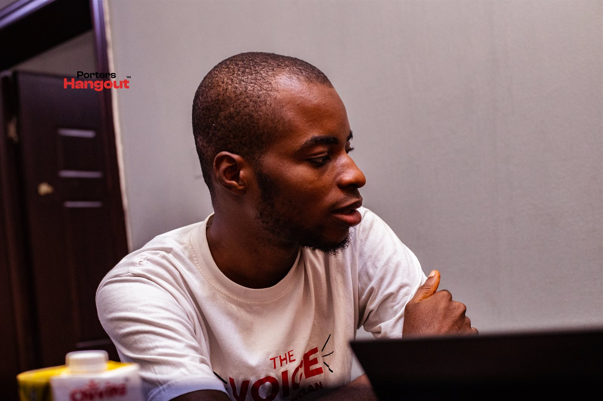
STORYFrom Zero to Launching Kamshfoods in Under 2 Months
How Alex Comfort reconnected with The Porters Clan leadership and launched a thriving brand.
We help young builders, creators, and entrepreneurs turn what they already have into sustainable freedom. In just 7 days.
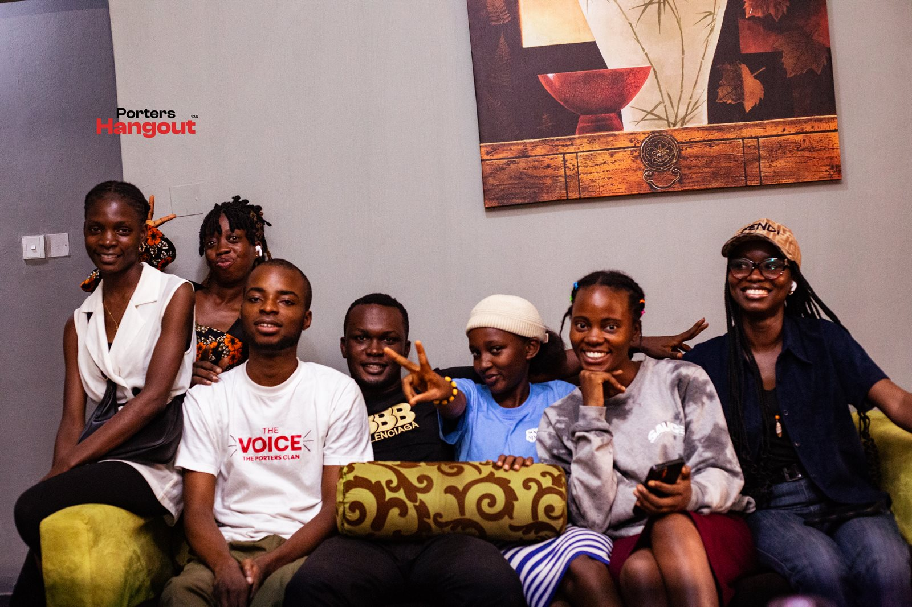
The Porters Clan is a movement: not a course, not a programme, not a motivational circle.
We are a growing community of young Africans who already have something (a skill, a craft, a service, a platform) and are learning how to turn it into real, sustainable freedom.
We call it porting: the act of carrying what you have into where you're going.
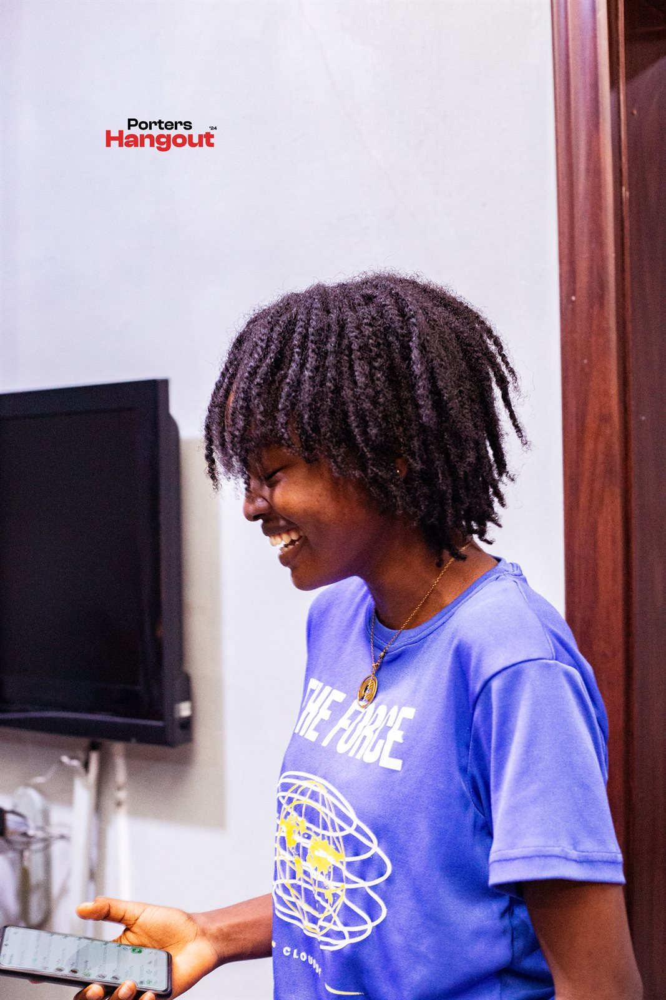
I HAVE SOMETHING.
THIS CAN FEED ME.
Because when you stop surviving and start building with intention, freedom follows.
You have a skill like design, writing, coding, or photography, but you're not earning consistently from it yet.
You make things people love (music, art, content) but you haven't figured out how to build a business around it.
You're already making money, but it feels scattered. No structure. No system. No growth path.
You're tired of planning and ready to build. You just need the right push and the right people.
Every new Porter goes through our 7-day Clarity Sprint, a focused, no-nonsense process that takes you from "I have something" to "I know exactly what I'm building and how to sell it."
What do you actually do best? Strip away the noise.
Who specifically needs what you offer? Name them.
Turn your skill into something someone can actually buy.
Stop guessing. Learn to price based on value, not fear.
Build a simple, functional online presence that works.
Learn to talk about what you do in a way that lands.
Put it out there. Get your first sale. Start the cycle.
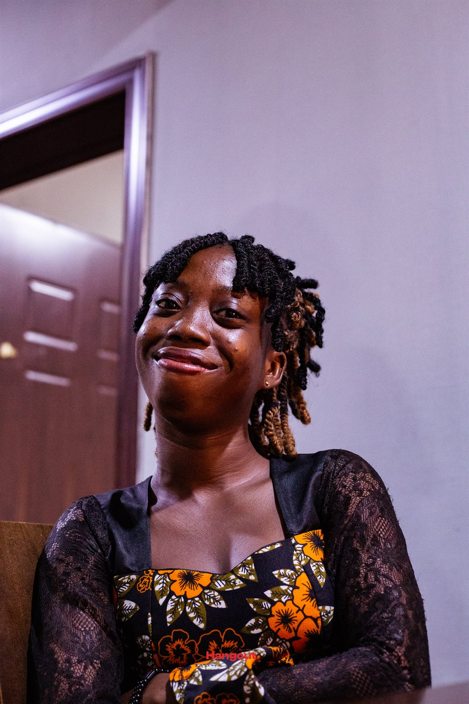
Cells are focused micro-communities within The Porters Clan. Each one is built around a specific lane, so you're always surrounded by people who understand your grind.
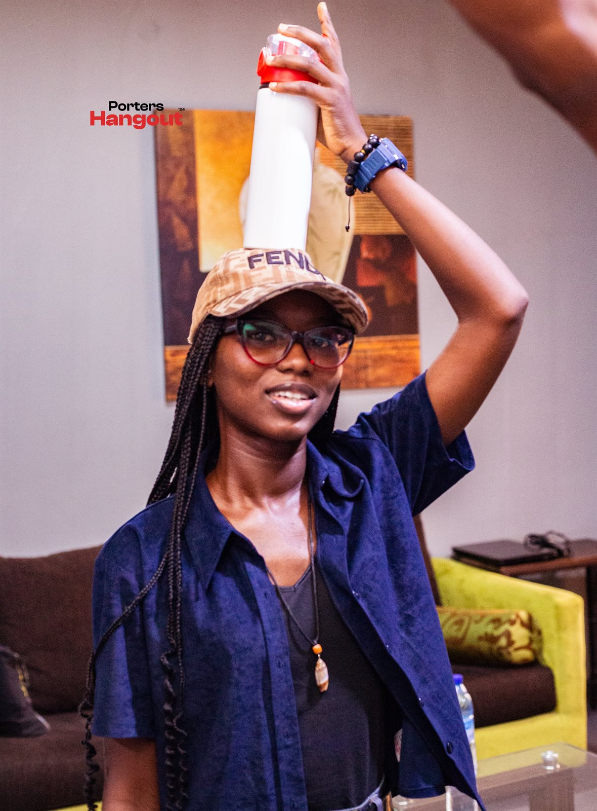
CELL 01For designers, artists, photographers, videographers, musicians, and anyone building in the creative space. You'll learn how to price your art, attract clients, and build a creative business that doesn't burn you out.
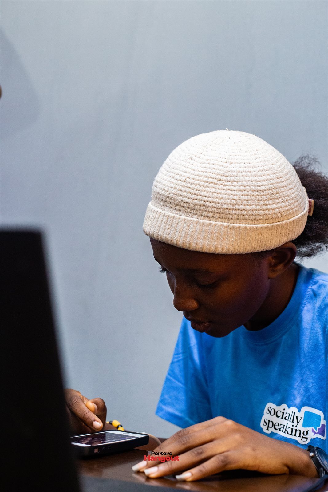
CELL 02For content creators, writers, podcasters, influencers, and digital builders. You'll learn how to grow your audience, monetize your platform, and build a media brand that generates income.
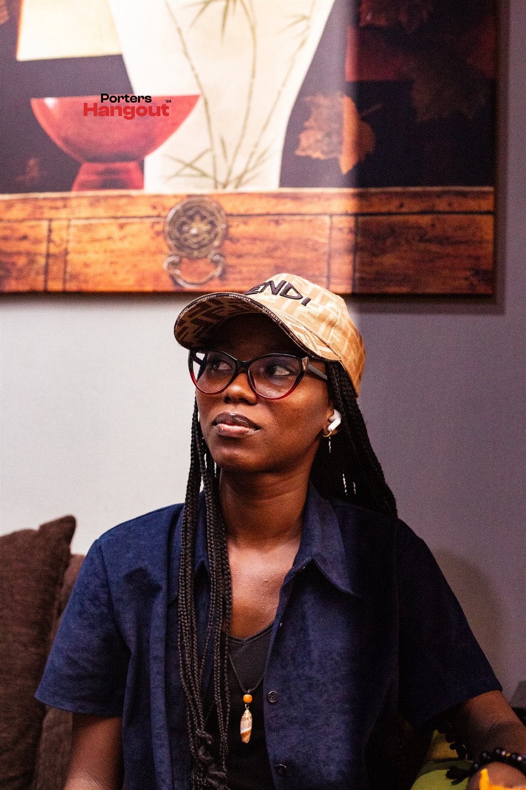
CELL 03For community builders, event planners, social entrepreneurs, and anyone whose value comes from connecting people. You'll learn how to structure, scale, and monetize social capital.
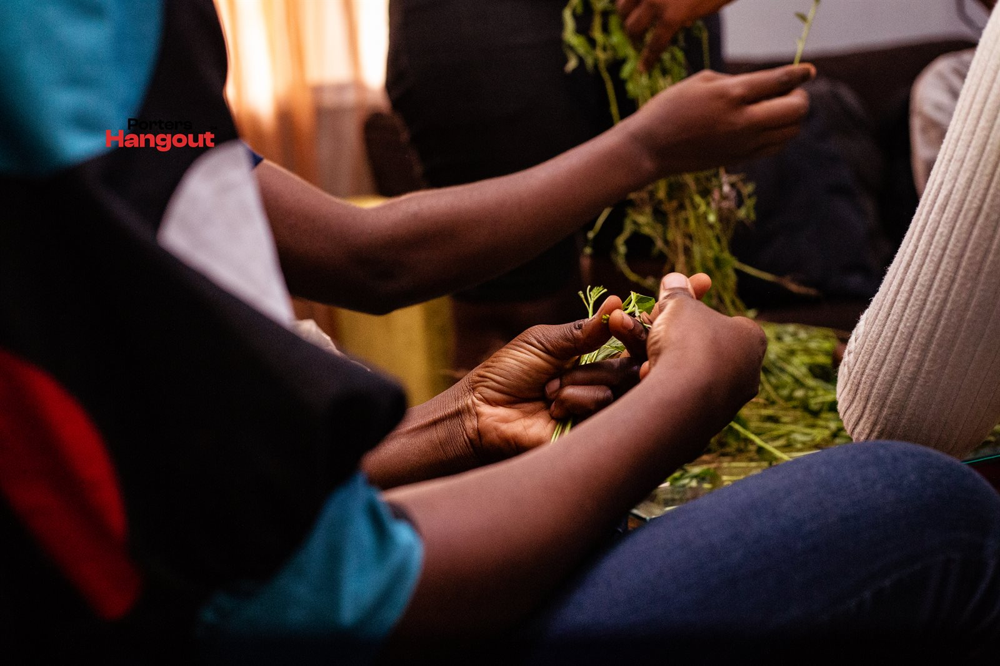
CELL 04For e-commerce sellers, service providers, freelancers, and anyone selling a product or service directly. You'll learn sales systems, client management, and how to build a real business engine.
You'll know exactly what you're building, who it's for, and how to sell it.
You'll be surrounded by people who are building too, not just talking about it.
Weekly check-ins, peer reviews, and real feedback from people in your lane.
Templates, guides, and frameworks: real tools you can use immediately.
Direct access to mentors, collaborators, and opportunities you won't find alone.
From our Porters Hangout events to weekly Cell sessions, from peer reviews to surprise collaborations: this is what it looks like when builders come together.
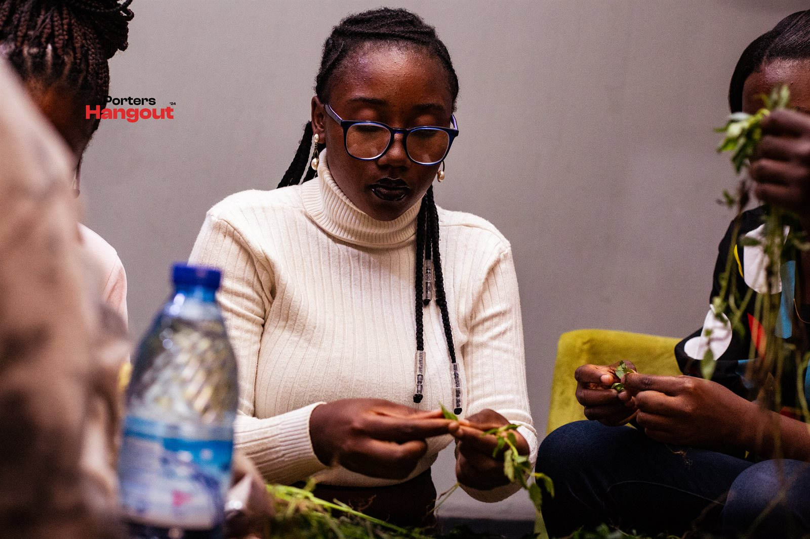
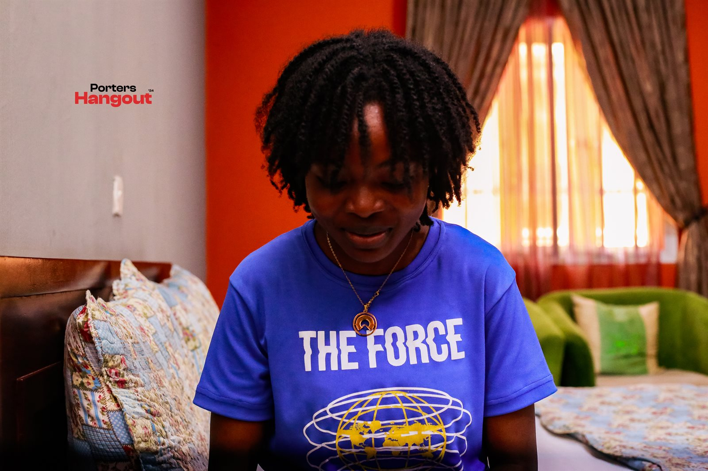
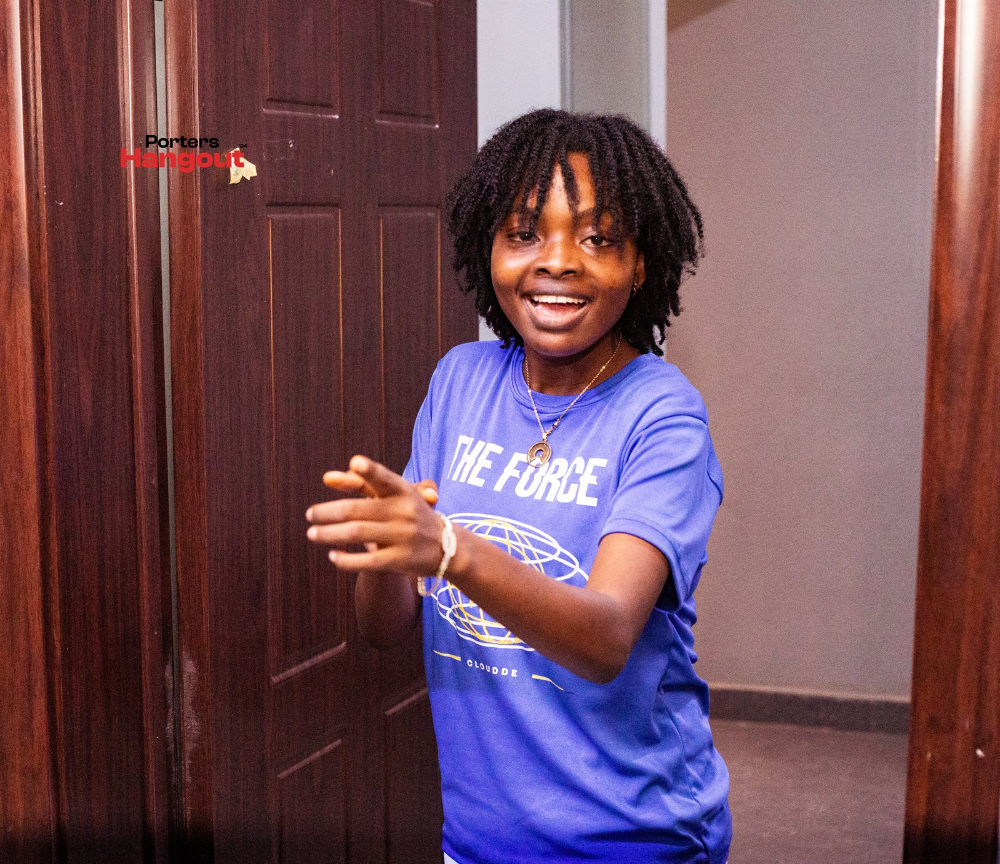
"Even as a quiet learner, The Porters Clan has given me extraordinary opportunities to grow. From serving behind the scenes on Recalibrate OAU to performing spoken word in front of over 1,000 students at FUTA alongside the Chief Porter, this community empowers its members and truly invests in their growth. I'm deeply grateful to be a part of it."
"There are self-development communities, business communities, and spaces for almost every niche you can think of. But The Porters Clan is unlike any other. It is a place where visions are birthed: a movement of young people committed to impacting Nigeria and the world, not just through motivation and sheer grit, but with a grounded understanding of who they are and the vision that propels them. The Chief Porter instills an authentic confidence in who we are while demanding excellence in everything we do."
"I joined The Porters Clan knowing nothing about building online. Within months, I organized my first online webinar. After taking a break and returning, I reconnected with the community leadership and successfully launched my food brand, Kamshfoods, in under two months. You can choose to be great or small, but the people you surround yourself with make all the difference."

STORYHow Alex Comfort reconnected with The Porters Clan leadership and launched a thriving brand.
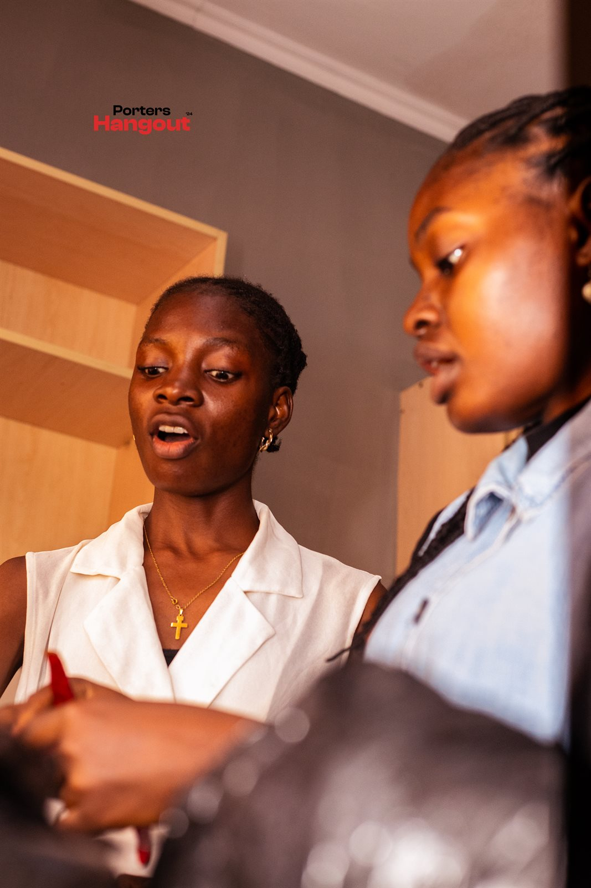
SPOTLIGHTThe Adeyemo Grace shares how serving behind the scenes on Recalibrate OAU unlocked extraordinary growth.
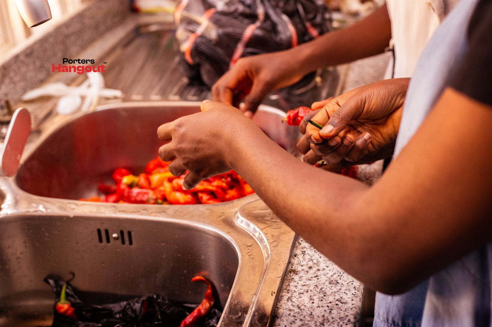
PERSPECTIVEImole Okediji on why The Porters Clan is a movement of grounded, confident young leaders.
Stop waiting for the perfect moment. Start building with people who understand the grind.